先日2003年に発売され
たWeb向け素材集を購入しましたが、付属してきたCDにファイルを見ることのできないものがありした。
ルートのフォルダは見えるにも関わらず、開いたフォ ルダにはなにも表示されません。
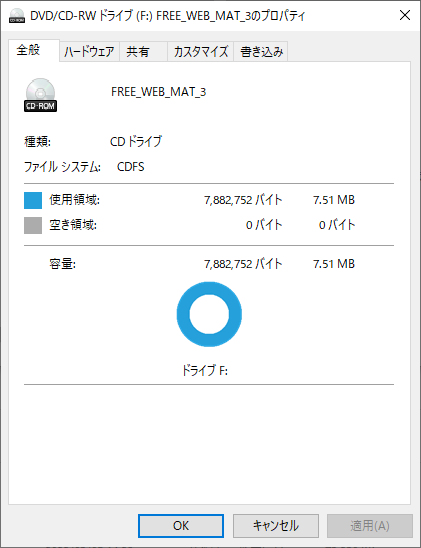CD自体のプロパティによると、7MBの使用済み領域 がありました。
ここになにかのデータがありそうです。データ復旧ツールには無料の物から有料のものまでありますが、100円ちょっとのCDにお金をかけ るのは癪なので、無料のツールを探しました。
今回はphotorecを 使用しました。ソースコードが公開されているファイルシステム復旧ソフトTestDiskに付属しているデータ復旧ツールで、写真を始め とした様々なファイル形式の探索・復旧が可能なようです。
今回のケースでは幸運にもファイルシステムのみの故障で、 データ自体は無事でした。
ルートのフォルダは見えるにも関わらず、開いたフォ ルダにはなにも表示されません。
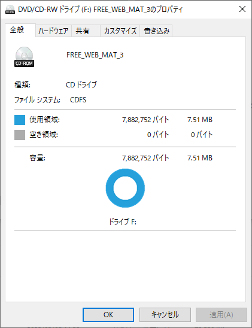CD自体のプロパティによると、7MBの使用済み領域 がありました。
ここになにかのデータがありそうです。データ復旧ツールには無料の物から有料のものまでありますが、100円ちょっとのCDにお金をかけ るのは癪なので、無料のツールを探しました。
今回はphotorecを 使用しました。ソースコードが公開されているファイルシステム復旧ソフトTestDiskに付属しているデータ復旧ツールで、写真を始め とした様々なファイル形式の探索・復旧が可能なようです。
今回のケースでは幸運にもファイルシステムのみの故障で、 データ自体は無事でした。
photorecは基本的にcmd.exe上で動かすアプリケーションです
が、qt GUIも付属しているのでこちらを使用しました。
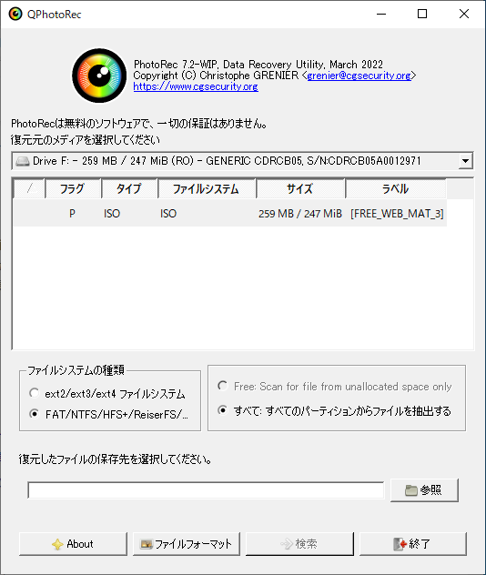
qphotorec_win.exeを起動すると右のようなGUIが開きま
す。
ここで復旧したディスクドライブとファイルシステムの種類・探索するファイルのフォーマットを指定します。
photorecは探索で見付かったデータをすぐにHDDに書き出します。書き出し先を指定することになりますが、
エラーを吐いてしまうので、ここでパスに英語以外が入ったフォルダ を指定してしないようにしましょう。
ユーザー名に日本語が入っているときは C:Users/Shared ? を指定するのがオススメです。
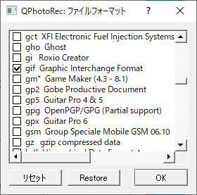Photorecは様々なファイル形 式の復旧に対応しますが、こんかい欲しいファイルはGIFファイルのみなのでGIFのみを指定しました。
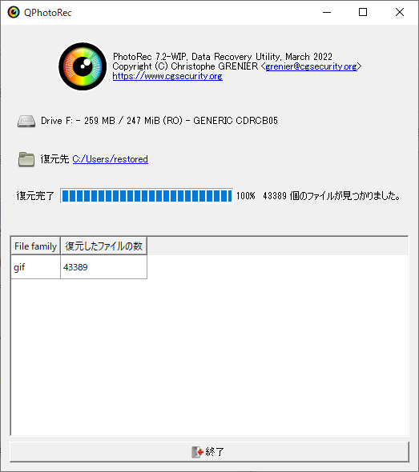検索ボタンを押すとすぐにファイル探索がはじまりま す。今回の場合は数分で処理がおわりました。
結果ほとんどのファイルをCDから読み出すことができましたが、どういうわけか重複するファイルが40000個ほど作成されてしまいまし た。
それぞれのファイルは一バイトまできっちり一致するのでハッシュ値を計算して重複を弾いてやることにしました。
シェル芸をしてもいいのですが、今回はWindowsで作業しているので(実はこのときMacにCDを 繋いだところなぜかMacOSが破壊されそちらの復旧も同時平行でやっていました(´･_･`))FileManyを つかうことにします。
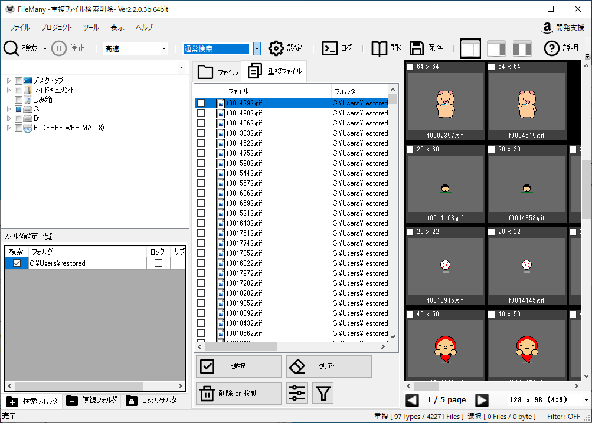
初回の起動時に広告表示型ウイルスの宣伝が 入るので間違えてインストールしないようにしましょう(この広告がFilemanyの開発資金になります)。GMOはいい加減狡い商売をやめたほうがいいとおもいます。
Photorecは500ファイルごとにフォルダ を生成します。重複を削除したら、エクスプローラーで NOT kind:folder を検 索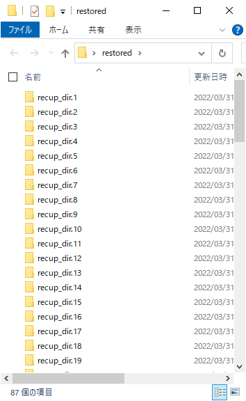
ここで復旧したディスクドライブとファイルシステムの種類・探索するファイルのフォーマットを指定します。
photorecは探索で見付かったデータをすぐにHDDに書き出します。書き出し先を指定することになりますが、
エラーを吐いてしまうので、ここでパスに英語以外が入ったフォルダ を指定してしないようにしましょう。
ユーザー名に日本語が入っているときは C:Users/Shared ? を指定するのがオススメです。
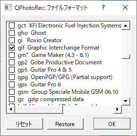Photorecは様々なファイル形 式の復旧に対応しますが、こんかい欲しいファイルはGIFファイルのみなのでGIFのみを指定しました。
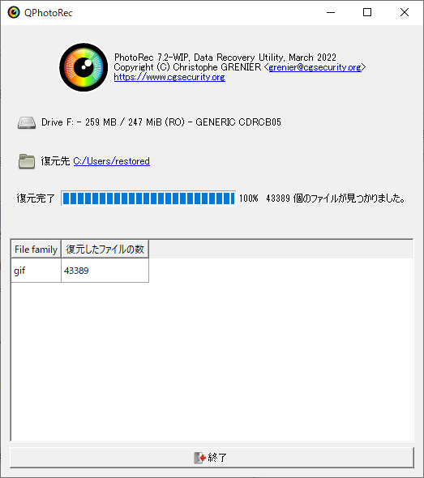検索ボタンを押すとすぐにファイル探索がはじまりま す。今回の場合は数分で処理がおわりました。
結果ほとんどのファイルをCDから読み出すことができましたが、どういうわけか重複するファイルが40000個ほど作成されてしまいまし た。
それぞれのファイルは一バイトまできっちり一致するのでハッシュ値を計算して重複を弾いてやることにしました。
シェル芸をしてもいいのですが、今回はWindowsで作業しているので(実はこのときMacにCDを 繋いだところなぜかMacOSが破壊されそちらの復旧も同時平行でやっていました(´･_･`))FileManyを つかうことにします。
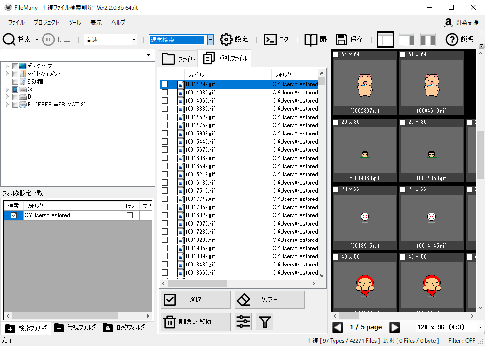
初回の起動時に広告表示型ウイルスの宣伝が 入るので間違えてインストールしないようにしましょう(この広告がFilemanyの開発資金になります)。GMOはいい加減狡い商売をやめたほうがいいとおもいます。
Photorecは500ファイルごとにフォルダ を生成します。重複を削除したら、エクスプローラーで NOT kind:folder を検 索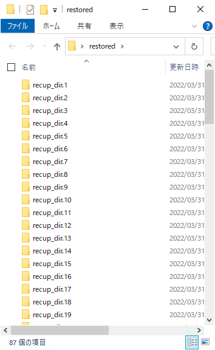